Varje dag
Så funkar det
- 1

Förbered
Läs dagens sida och plocka fram det som behövs – oftast saker ni redan har.
- 2

Sjung
Samla barnen och sjung samlingssången.
- 3

Läs raden
Läs Busnissens korta rad med glad röst och visa bilden.
- 4

Gör uppdraget
2–5 minuter. Klart när barnen tappar intresset – helt okej!
- 5
Upprepa
Små barn älskar att göra samma sak igen. Kör gärna en gång till!
Allt står i PDF:en – en sida per dag med uppdraget, Du behöver och Tänk på. Tryggt för små: inga smådelar, bara batteriljus, vuxen förbereder och klipper.
Samlingssången
Busnissen, var är du?
Busnissen, Busnissen, var är du?
Har du gjort nåt bus i natt igen nu?
Tripp trapp, tipp tapp, ett litet spår,
vi hjälps åt, och så vi går!
Sjung två gånger
schhh … nu öppnar vi brevet

Allt material
Ladda ner
- PDFAllt för 1–3 årIntroduktion och en sida per lucka – 25 sidor.4,0 MB
- PDFPersonalens översiktHela december på en sida – för väggen. 1 sida.196 kB
- PDFDela med kollegorA4 med QR-kod till sidan – sätt upp eller skicka vidare. 1 sida.457 kB
- MP3Samlingssången”Busnissen, Busnissen, var är du?” – ca 48 sekunder.1,1 MB
- MP4InstruktionsfilmenKort film för personalen, ca 1,5 minut.1,9 MB
- PDFDiplom att skriva ut”Jag hjälpte Busnissen!” – ett diplom per barn till lucka 24. 1 sida.402 kB
Varje lucka kan också skrivas ut för sig. Översikten finns också som bild (PNG).

Tipsa andra
Dela med kollegor
Skriv ut bladet med QR-kod eller skicka länken: buskalendern.se/smabarn.html
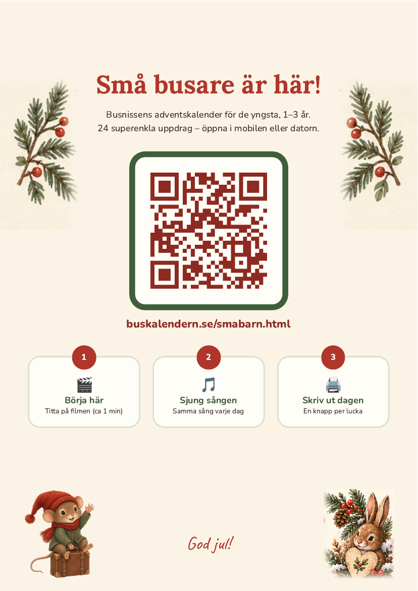

1–24 december
De 24 luckorna
Klicka på en lucka för att se dagens sida i stort format.
- 1
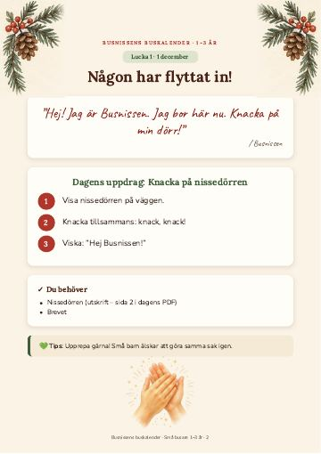
Någon har flyttat in!🖨 Utskrift ingår🖨 Skriv ut - 2
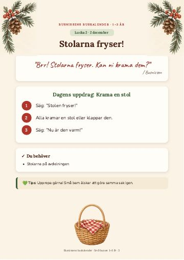
Stolarna fryser!Vardagssaker🖨 Skriv ut - 3
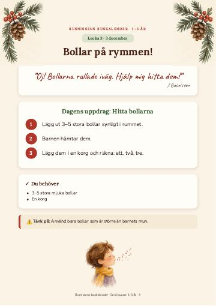
Bollar på rymmen!Vardagssaker🖨 Skriv ut - 4
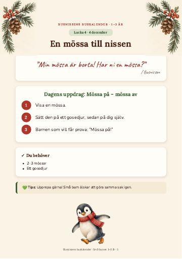
En mössa till nissenVardagssaker🖨 Skriv ut - 5
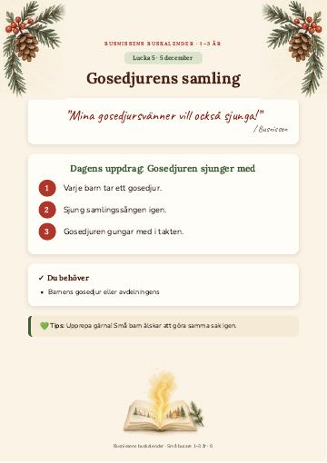
Gosedjurens samlingVardagssaker🖨 Skriv ut - 6
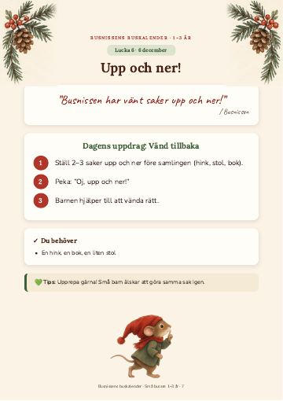
Upp och ner!Vardagssaker🖨 Skriv ut - 7
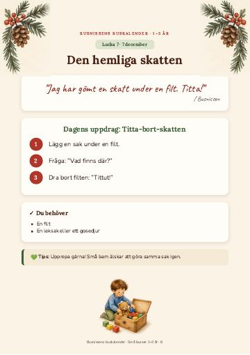
Den hemliga skattenVardagssaker🖨 Skriv ut - 8
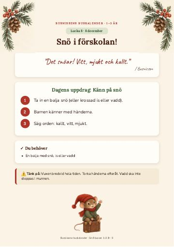
Snö i förskolan!Vardagssaker🖨 Skriv ut - 9
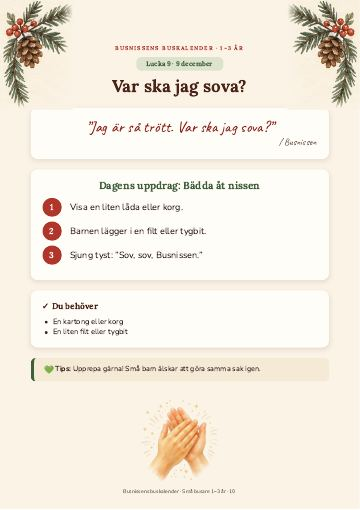
Var ska jag sova?Vardagssaker🖨 Skriv ut - 10
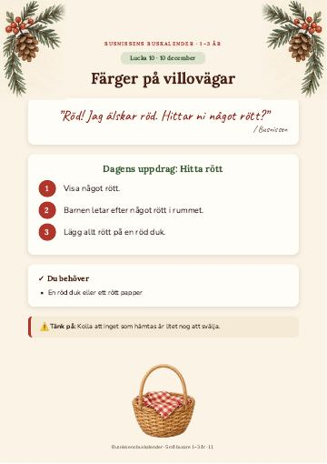
Färger på villovägarVardagssaker🖨 Skriv ut - 11
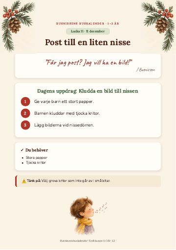
Post till en liten nisseVardagssaker🖨 Skriv ut - 12
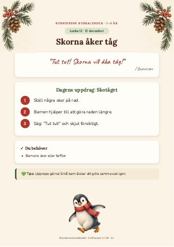
Skorna åker tågVardagssaker🖨 Skriv ut - 13
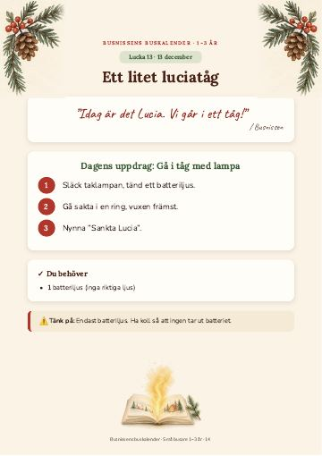
Ett litet luciatågVardagssaker🖨 Skriv ut - 14
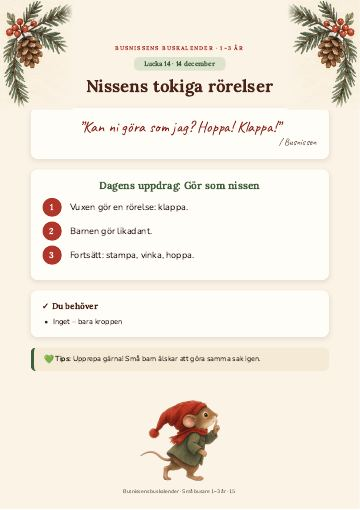
Nissens tokiga rörelserVardagssaker🖨 Skriv ut - 15
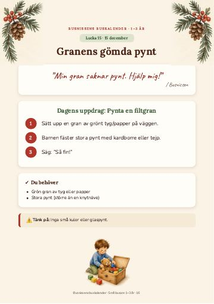
Granens gömda pyntVardagssaker🖨 Skriv ut - 16
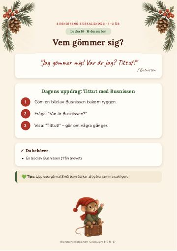
Vem gömmer sig?🖨 Utskrift ingår🖨 Skriv ut - 17
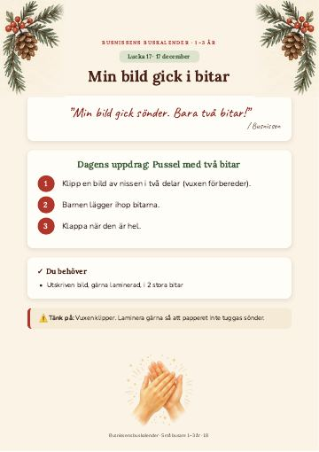
Min bild gick i bitar🖨 Utskrift ingår🖨 Skriv ut - 18
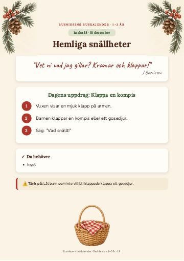
Hemliga snällheterVardagssaker🖨 Skriv ut - 19
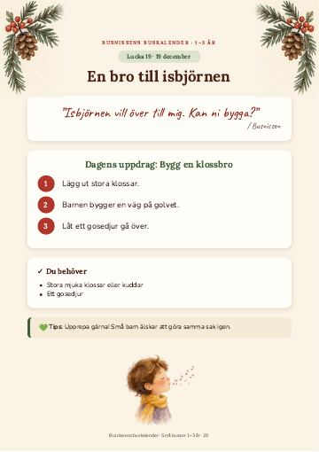
En bro till isbjörnenVardagssaker🖨 Skriv ut - 20
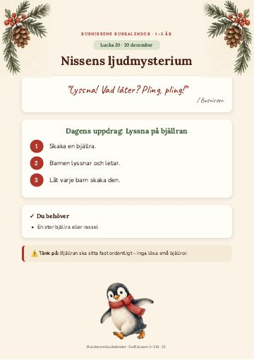
Nissens ljudmysteriumVardagssaker🖨 Skriv ut - 21
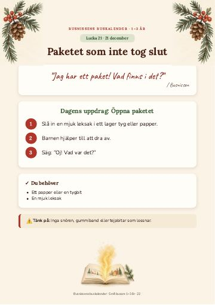
Paketet som inte tog slutVardagssaker🖨 Skriv ut - 22
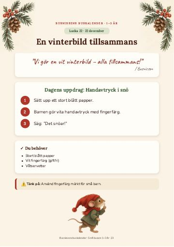
En vinterbild tillsammansVardagssaker🖨 Skriv ut - 23
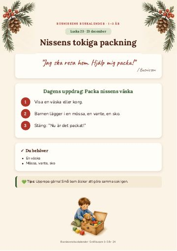
Nissens tokiga packningVardagssaker🖨 Skriv ut - 24
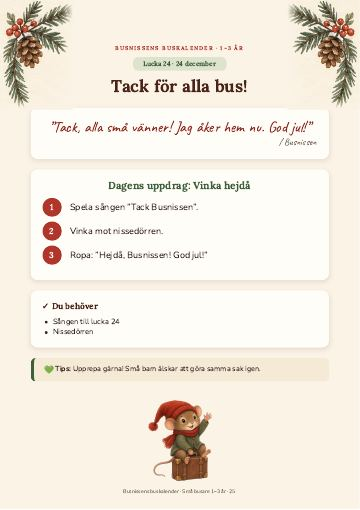
Tack för alla bus!Vardagssaker🖨 Skriv ut